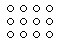

Home Page
F.A.Qs
Statistical Charts
Past Contests
Scheduled Contests
Award Contest
| Online Judge | Problem Set | Authors | Online Contests | User | ||||||
|---|---|---|---|---|---|---|---|---|---|---|
| Web Board Home Page F.A.Qs Statistical Charts | Current Contest Past Contests Scheduled Contests Award Contest | |||||||||
|
Language: Puncher
Description Puncher is a device with several needles for making holes in tickets. At the factory there is a rectangular form with M rows and N columns, as shown in the picture (M=3, N=4), to make different punchers with 1, 2, ... , M*N needles. The rows and columns of needles are perpendicular to each other. The distance between rows is equal to the distance between columns. Obviously, it is possible to make 2M*N-1 different punchers in this way.
 However, sometimes it is not possible to distinguish tickets that are perforated by different punchers. Let us assume that while punching two opposite borders of the ticket are parallel to the rows of the needles, the other pair of opposite borders being parallel to the columns of the needles. The number of the holes in a perforated ticket is always equal to the number of the needles in the corresponding puncher. A composition of the following transformations is allowed:
Your task is to write a program to determine how many actually different punchers can be made with an M*N form. Two punchers are considered actually different, if it is impossible to match using any combination of the above described operations the holes in the two tickets perforated by these punchers. Input The input file consists of two positive integer numbers M (not greater than 4) and N (not greater than 8) separated by a single space. Output The output file consists of a single integer indicating the number of the actually different punchers. Sample Input 3 3 Sample Output 85 Source |
[Submit] [Go Back] [Status] [Discuss]
All Rights Reserved 2003-2013 Ying Fuchen,Xu Pengcheng,Xie Di
Any problem, Please Contact Administrator